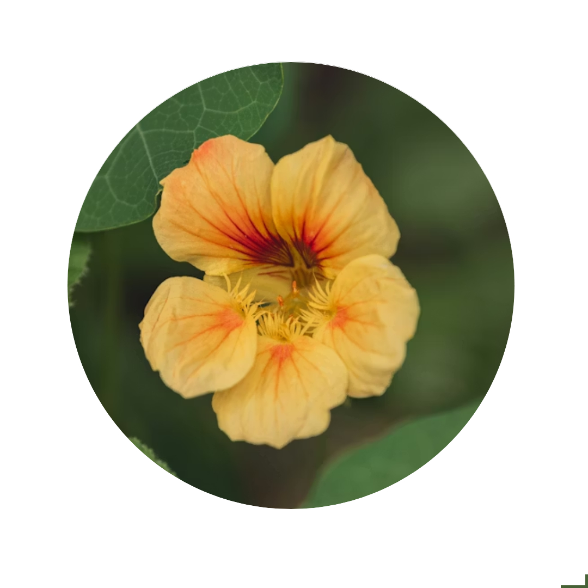
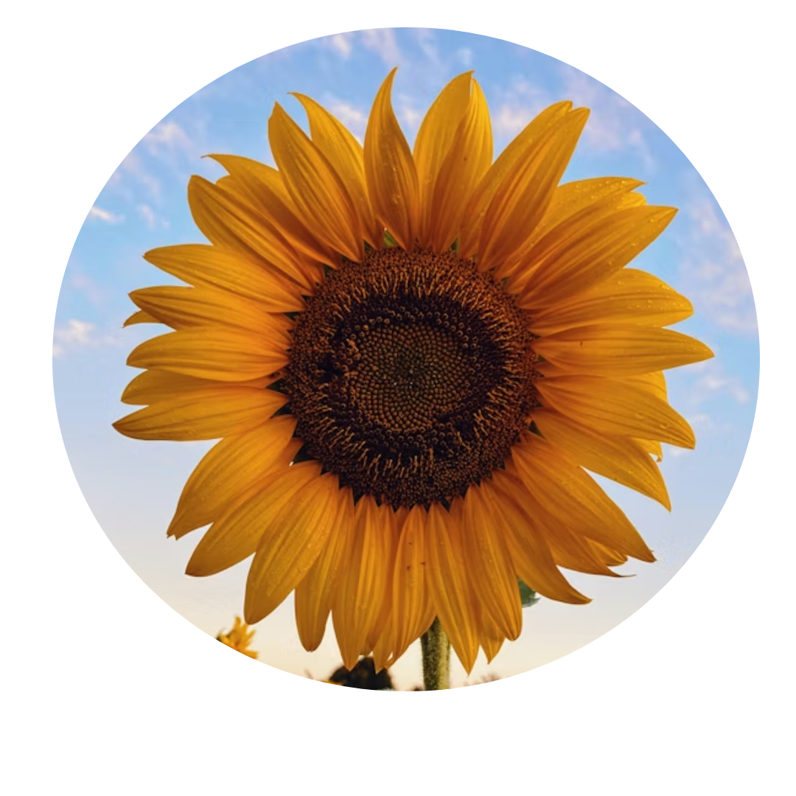

What is Rest & Reconnect LV?
Las Vegas is a transient city. People move here for work, for change, or for a fresh start, but that constant movement makes it difficult to build long-lasting, mutually supportive relationships.
For people living with chronic illness, disability, or fluctuating energy, that challenge is even harder.
Rest & Reconnect LV was created to united preexisting disability community and create no-cost and accessible events.
Organizers

Laya
created Rest & Reconnect LV to fill a gap in Las Vegas: accessible, low-pressure spaces for disabled and chronically ill folks. She designs websites, experiments with tech, and is always exploring new ways to connect people.

Jackie
co-organizes Rest & Reconnect LV.
Jackie builds community through podcasting, music, and hands-on collaboration. With experience in nonprofit work, she turns ideas into action and helps ensure projects get done.
Rest & Reconnect strives for the privacy of all members and organizers. Don't worry though, we don't bite! In fact, Rest & Reconnect has an open call to co-organizers. Learn more on the Wanna be an Organizer? page.
We Want To Hear From You!
Rest & Reconnect LV welcomes organizers who want to help shape future events and expand community reach.
We are especially interested in:
Someone who uses a wheelchair or larger mobility device.
A disabled veteran.
Someone under 21 who wants to help develop under-21 events.
Someone who is Deaf, hard of hearing, or uses ASL.
Note: We are actively seeking grants that would allow us to secure ASL interpreters for events.
Even if you do not identify with the roles above, we are still interested in hearing your perspective on strengthening the disabled community in Las Vegas.
Apply to Become an Organizer
Interested in helping build accessible events in Las Vegas? Fill out the organizer interest form below for Rest & Reconnect LV!